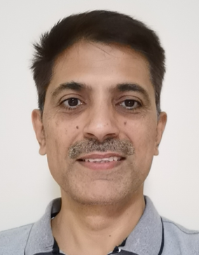

Dr. Ishtiaq Rasool KhanProfessor
أستاذ |
 | Our work on evaluation of Tone-mapped Image quality Assessment metrics has been accepted in IEEE Transactions in Image Processing. |
Monday, Wednesday (By appointment through email)
2012-2016: King Abdulaziz University
2008-2012: Institute for Incocomm Research, A*STAR. Singapore
2007-2008: Kyushu Institute of Technology, Japan
2002-2007: Kitakyushu University, Japan
2000-2002: Hokkaido University, Japan (JSPS Fellow)
1998-2000: (PhD, Digital Filters) Hokkaido University, Japan
1996-1998: (MS, Information Engineering) Hokkaido Unviersity, Japan
1992-1994: (MS, Systems Engineering) Quaid-e-Azam University, Islamabad, Pakistan
1987-1992: (BS, Electrical Engineering) UET Lahore (Taxila Campus), Pakistan
Image Procesing, Video Processing, HDR imaging, Signal Processing, Data Analytics